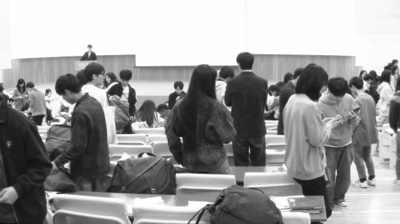
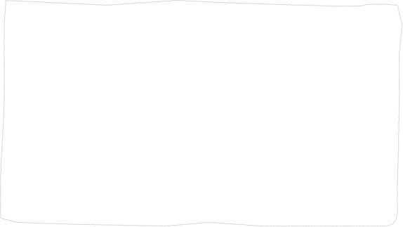
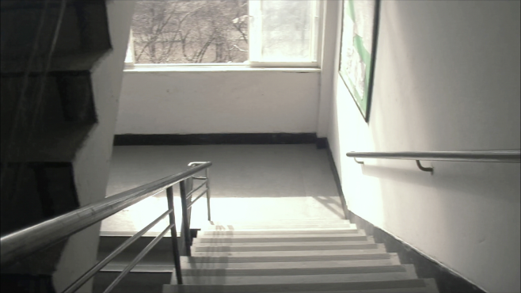
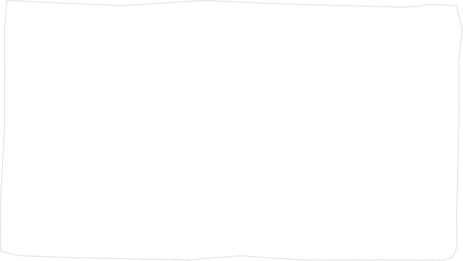

(Translating Demographic Data into Spatial Experience)
(Social Significance)
(Research Limitations and Conclusion)
인구 데이터를 공간의 경험으로 전환하기


따라서 프로젝트에서 제작한 2040년의 장면 또한 미래의 실제 모습을 재현한 자료가 아니다. 공식 인구전망과 공간축소 관련 연구를 출발점으로 삼되, 기존 공간의 형태는 남아 있고 그곳을 이용하던 사람의 존재만 현저히 줄어든 상황을 의도적으로 설정한 시각적 시나리오이다. 생성형 AI를 통해 제작된 이 장면들은 미래에 대한 증거가 아니라, 현재의 공간을 다른 시점에서 바라보기 위한 Speculative Visual Scenario / 가상적 시각 시나리오로 기능한다.
이러한 한계를 전제로 했을 때 Kenopsia Archive가 보여주고자 하는 것은 ‘2040년의 폐허’가 아니다. 오히려 사람이 사라진 장면을 가정함으로써, 평소에는 너무 익숙해 의식하지 못했던 사람의 존재가 공간을 어떻게 채우고 있었는지를 드러내는 데 있다. 교실에 학생이 앉아 있는 모습, 시장의 좁은 통로를 사람들이 오가는 모습, 정류장에서 같은 방향을 바라보며 버스를 기다리는 모습은 지금은 특별하지 않다. 그러나 이러한 행동이 사라진 동일한 공간을 마주했을 때, 비로소 그 장소가 얼마나 사람의 움직임과 관계에 의해 완성되고 있었는지를 인식하게 된다. 따라서 Kenopsia Archive에서 2040년은 결론이 아니라 2026년을 다시 바라보기 위한 장치이다. 프로젝트의 최종적인 기록 대상은 미래의 빈 공간이 아니라, 아직 사람이 존재하고 일상이 반복되고 있는 현재의 공간이다.
Kenopsia Archive가 빈 공간을 보여주는 목적은 인구감소에 대한 공포를 만들기 위한 것이 아니다. 폐교, 빈집, 유휴 공공시설처럼 본래 기능을 잃은 공간은 이미 현실에 존재하고 있으며, 정부와 연구기관은 이들을 단순히 방치하는 것이 아니라 어떻게 정비하고 다시 활용할 것인가를 중요한 정책과제로 다루고 있다. 2025년 정부의 범정부 빈집 관리 종합계획 역시 빈집 정보의 통합, 정비와 활용 확대를 주요 내용으로 제시하였다. 국토연구원 역시 축소도시에서 유휴·방치 공간이 증가할 수 있다는 점을 지적하면서, 단순한 철거나 방치보다 기존 공간의 재활용과 적정규모화를 중요한 과제로 제안한다. 따라서 본 프로젝트의 빈 공간은 ‘대한민국의 미래가 이렇게 될 것이다’라는 결말이 아니라, 오히려 다음 단계의 질문을 만드는 역할을 한다.
인구통계는 사회적 변화의 규모를 정확하게 측정하고 비교할 수 있다는 장점이 있다. 그러나 수십만 명, 수천만 명 단위의 숫자가 개인의 일상에서 구체적으로 어떤 의미를 갖는지를 보여주는 데에는 한계가 있다. Kenopsia Archive는 이러한 거시적 정보를 단순히 새로운 그래프로 만드는 데서 멈추지 않는다. 인구 변화에서 출발한 질문을 교실의 책상, 시장의 통로, 상업공간의 휴게석, 정류장의 대기공간처럼 사람이 실제로 경험해 온 공간의 크기로 전환한다. 따라서 프로젝트의 질문 역시 How many people are declining? 얼마나 많은 사람이 감소하는가? 에서 How can demographic change be experienced through space? 인구의 변화는 공간에서 어떻게 경험될 수 있는가?로 이동한다. Zimmerman, Forlizzi, Evenson은 Research Through Design에서 디자인 활동과 결과물을 연구문제를 탐구하고 지식을 만들어내는 연구 방법으로 제안하였다. 이 관점에서 Kenopsia Archive의 사진, 영상, 공간 분류와 미래 시나리오는 연구 결과를 꾸미기 위한 장식이 아니라, 인구와 공간 사이의 관계를 다른 방식으로 질문하기 위한 연구 도구라고 볼 수 있다. 즉 본 프로젝트에서 디자인의 역할은 인구감소를 보기 좋게 설명하는 데 있는 것이 아니라, 추상적인 사회현상을 개인이 지각할 수 있는 공간적 경험으로 번역하는 것에 있다.
빈 공간을 기록하는 것에서 이후의 공간을 질문하는 것
공간을 사용하던 사람이 줄어든 뒤,
남겨진 공간은 어떻게 다뤄져야 하는가?
연구의 한계와 결론



Kenopsia Archive는 대한민국의 인구 감소가 특정 공간을 반드시 폐쇄하거나 비어 있게 만든다고 예측하는 프로젝트가 아니다. 실제 공간의 변화에는 인구뿐 아니라 지역의 경제상황, 도시개발, 소비 방식, 교통정책, 시설 운영 방식 등 다양한 조건이 함께 작용한다. 또한 동일한 인구 감소가 나타나더라도 지역과 공간의 성격에 따라 그 결과는 서로 다를 수 있다. 본 프로젝트가 선택한EDU·RTL·TRN 역시 대한민국의 모든 공간을 대표하기 위한 분류가 아니다. 학교, 상업시설, 교통시설처럼 사람의 반복적인 이용이 공간의 기능과 분위기를 뚜렷하게 만들어내는 장소를 중심으로, 인구와 공간 사이의 관계를 관찰하기 위해 설정한 연구 범위이다.